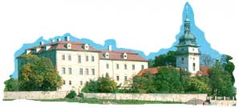
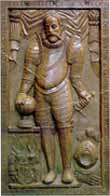

|
|
 |
|
Tycho
Brahe hält
sich nur fünfzehn Monate in Prag auf. Die Stadt,
die ihn Willkommen geheißen hat, während sich sein eigenes
Land von ihm abwandte, scheint den Astronomen allerorts zu
ehren.
In den Straßen
und auf den Monumenten der tschechischen Hauptstadt sind Inschriften und Ehrungen zu
lesen. Das gilt natürlich auch für sein
Grab aus rotem Stein in der Kirche der Jungfrau Maria vor
dem Tyn. |
|
|
|
| |
An dieser Stelle sei daran erinnert, dass sich
der nebenstehend zusammen mit dem dänischen Astronomen abgebildete Rudolph
II. für Wissenschaften, Astrologie und Alchimie interessierte und Wissenschaftlern eine
grenzenlose Bewunderung entgegenbrachte. |
|
|
|
| |
Dementsprechend bereitet es dem Kaiser eine große Freude,
dem Mathematiker im Exil einen Platz an seinem
Hof anzubieten. |
|
|
|
| |
Bei seiner Ankunft in Prag 1599 lässt Rudolf
II. eine prunkvolle Residenz
in der Stadt einrichten und zeigt Tycho Brahe verschiedene
Schlösser für die Einrichtung seiner Sternwarte.

|
|
|
|
|
Tycho entscheidet
sich für das
Schloss von Benatky, das sich nur wenige Kilometer von Prag
entfernt befindet, und siedelt umgehend dorthin um. |
|
|
|
| |
Unzufrieden über
die Entfernung, die ihn
von der Hauptstadt trennt, bricht Tycho Brahe seine Arbeiten
im Schloss unvollendet ab und zieht mit seinen
Instrumenten zurück in die Stadt. |
|
|
|
|
Der Kaiser gibt
sofort den Befehl, dem Astronomen die
königlichen Gärten und Nebengebäude zur Verfügung zu stellen und
kauft ein benachbartes Haus, um Tycho Brahe dort zusammen
mit seiner Familie unterzubringen. Dieses Haus ist heute die Nr.°1 der Straße Novy Svet
im Stadtviertel HRADCANY am Fuße des kaiserlichen Schlosses. Zahlreiche Alchimisten haben
in den folgenden Jahren dort ihr Laboratorium
eingerichtet. |
|
|
|
| |
| Auch in der kleinen Halle der Mathematik
des Clementinums wird Tycho Brahe geehrt: er
ist auf einer der Fresken zu sehen. In
dem ehemaligen, dem heiligen Clemens geweihten Dominikanerkloster,
das später vom Jesuitenorden übernommen wurde, ist
heute die Nationalbibliothek Prag untergebracht.
Das Grab des 1601 frühzeitig verstorbenen Astronomen
befindet sich in der Kirche der Jungfrau Maria
vor dem Tyn im Zentrum der Hauptstadt.
1604 wird im Stadtviertel POHORELEC ein Tycho Brahe und
Johannes Kepler geweihtes Denkmal errichtet. Es wird erzählt, dass
der Astronome in einem der Häuser dieses
Viertels, an dessen Stelle heute das Gymnasium Jan Kepler
seht, mit folgenden Worten im Mund gestorben sei: Non frustra
vixisse vidcor, " ich glaube nicht, nutzlos gelebt zu haben".
|

 |
|
 |
|
|
|